Intuitive F2L: Pair, Then Insert
Every F2L case comes down to two things: pair the corner with its edge, then insert the pair. There are only three situations. (1) The pair is already made — just insert it. (2) The pieces are separated in the top layer — bring them together, then insert. (3) The corner's white sticker faces up — turn it to the side first, then pair. The two inserts below are the endpoints of all three — learn them until they're automatic, and most of the 41 cases will make sense on their own.
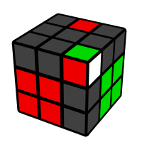
R U R'
U R U' R'From Intuition to Algorithms
Most of the 41 algorithms are just a short setup followed by one of the two inserts above — the insert is the last part of each algorithm (shown in blue). Learn to spot the setup, and the algorithm stops being a sequence to memorize: it's the setup, then the insert you already know.
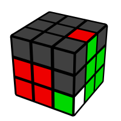
R U R' U' R U R'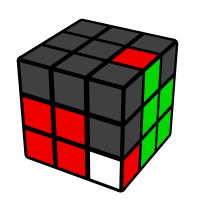
R U' R' U R U' R'All 41 Cases
The complete F2L set, grouped by where the corner and edge are. Each diagram shows only the two pieces that matter — everything else is greyed out. All algorithms are for the front-right slot, with the cross on the bottom.
Free Pairs
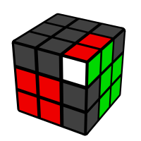
U R U' R'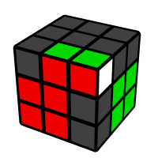
F R' F' R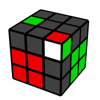
F' U' F
R U R'Disconnected Pairs
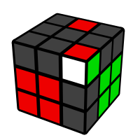
U' R U R' U2 R U' R'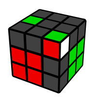
U' r U' R' U R U r'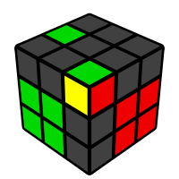
U' R U2 R' U2 R U' R'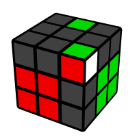
r' U2 R2 U R2 U r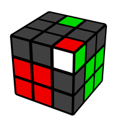
U' R U' R' U F' U' F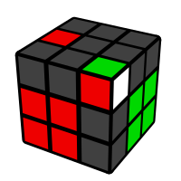
U' R U R' U R U R'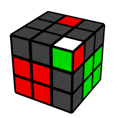
U R U2 R' U R U' R'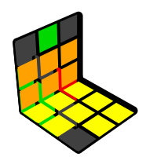
U' R U' R2 F R F' R U' R'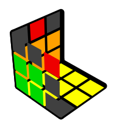
R U' R' U2 R U R'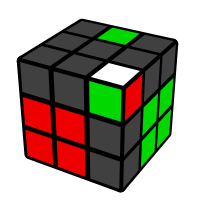
r U' r' U2 r U r'Connected Pairs
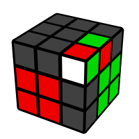
U' R U2 R' U F' U' F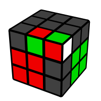
R U' R' U R U' R' U2 R U' R'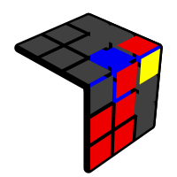
U R' U R U' R' U' R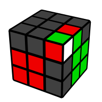
U' R U' R' U R U R'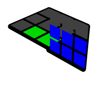
R U R' U2 R U' R' U R U' R'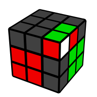
R U' R' U2 F' U' F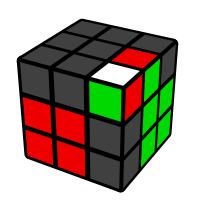
R U2 R' U' R U R'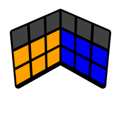
R' F R F' R U' R' U R U' R'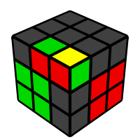
R U R' U2 R U R' U' R U R'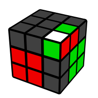
F U R U' R' F' R U' R'Corner In Slot
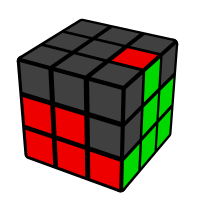
U' R' F R F' R U R'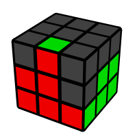
U R U' R' F R' F' RR U' R' U R U' R'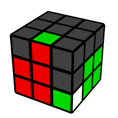
R U R' U' F R' F' R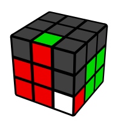
R' F R F' U R U' R'R U R' U' R U R'Edge In Slot
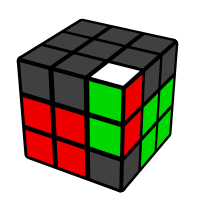
U' R' F R F' R U' R'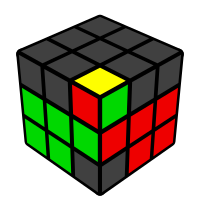
R U R' U' R U R' U' R U R'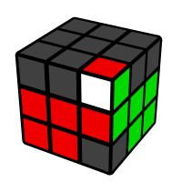
U' R U' R' U2 R U' R'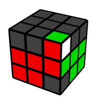
U R U R' U2 R U R'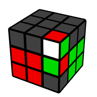
U' R U R' U F' U' F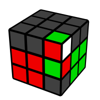
U F' U' F U' R U R'Pieces In Slot
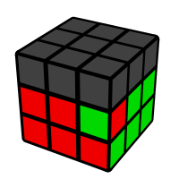
R2 U2 F R2 F' U2 R' U R'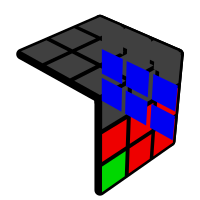
R U R' U' R U2 R' U' R U R'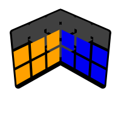
R U R' U2 R U' R' U R U R'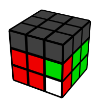
r U' r' U2 r U r' R U R'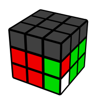
R U' R' r U' r' U2 r U r'